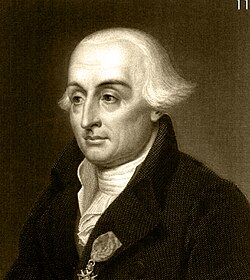

Joseph-Louis Lagrange
Biografía
Joseph-Louis Lagrange (Turín, 25 de enero de 1736 – París, 10 de abril de 1813) fue un matemático y astrónomo italo-francés. Director de matemáticas de la Academia Prusiana (1766-1786) y más tarde miembro destacado de la Académie des Sciences, transformó la mecánica clásica en análisis matemático con su Mécanique analytique (1788) y fundó el cálculo de variaciones junto a Euler.
Contribuciones científicas
• Ecuaciones de Euler-Lagrange y multiplicadores de Lagrange (cálculo variacional).
• Mecánica lagrangiana: principio de mínima acción, coordenadas generalizadas, energía potencial efectiva.
• Puntos de Lagrange en el problema de los tres cuerpos (1772).
• Teoría de números: teorema de los cuatro cuadrados, resolubilidad de ecuaciones bicuadráticas, teorema de Wilson.
• Análisis: fórmula de interpolación de Lagrange, series de potencias, teorema de Taylor generalizado.
• Álgebra: resolubilidad de ecuaciones mediante transformaciones simétricas, preludio de la teoría de grupos.
Primeros años
Hijo de un tesorero militar piamontés, se formó en el Collegio dei Nobili de Turín. A los 19 años era profesor adjunto de la Academia Artillería, donde impartió el primer curso de cálculo de Europa continental.
Cálculo de variaciones
Entre 1754-1756 envió a Euler su método δ para hallar extremos de funcionales; Euler lo proclamó «el más grande matemático vivo».
Berlín (1766-1786)
Invitado por Federico II tras la marcha de Euler a San Petersburgo, produjo más de 100 memorias y ganó los premios de la Academia de París en 1764, 1766, 1772 y 1780. Allí redactó la Mécanique analytique, «una obra que sólo contiene ecuaciones, y no dibujos».
París y Revolución
Se trasladó en 1787; fue miembro de la comisión que reformó los pesos y medidas y profesor fundador de la École Polytechnique (1794). Aunque moderado, sobrevivió al Terror gracias a su prestigio científico.
Sistema métrico
Defensor del sistema decimal, propuso el metro patrimonial (1/10 000 000 del meridiano) y el kilogramo como masa patrón; integró el Bureau des Longitudes (1795).
École Normale
Sus lecciones (1795) popularizaron el análisis diferencial en Francia, influyendo en Monge, Fourier y Cauchy.
Últimos años
Nombrado senador y conde del Imperio por Napoleón (1808). Revisaba una segunda edición de la Mécanique cuando falleció; fue enterrado en el Panteón de París.
Legado y honores
Miembro de las academias de París, Berlín, San Petersburgo y Turín; Gran Oficial de la Legión de Honor; su nombre figura en la Torre Eiffel y da nombre a cráteres lunares, puntos lagrangianos, un lago en Canadá y el asteroide (1006) Lagrange.
Referencia (formato APA):
Wikipedia contribuidores. (2025, 19 mayo). Joseph-Louis Lagrange. En Wikipedia, La enciclopedia libre. Recuperado 19 de mayo
de 2025, de https://es.wikipedia.org/wiki/Joseph-Louis_Lagrange.